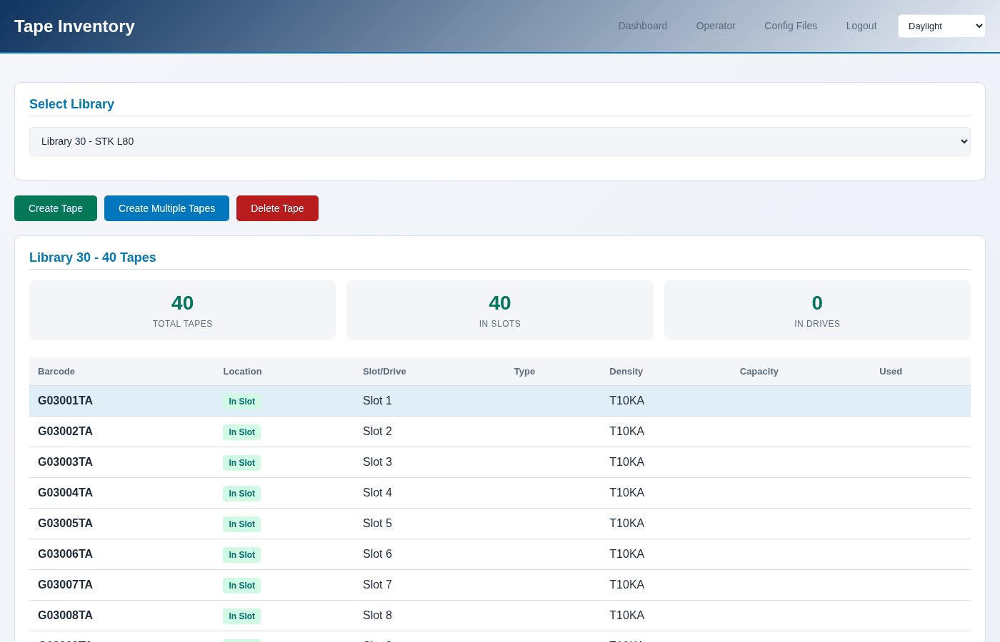

The tape inventory
Every tape a library holds, what is in each one, and how full it is.
In the console
Tapes → Inventory on the library page, or Operator → Tapes, at
/libraries/operator/tapes/.
{kind=link}

The library page shows the same tapes as tiles, which is the quickest way to see whether anything is filling up: a bar per tape, and how much room is left under it. The bar is blue while there is room, amber past 75%, and red past 90%.

From the terminal
$ sudo mhvtl tape list 50
BARCODE SLOT KIND DENSITY USED MB CAPACITY MB ON DISK
-------- ---- ---- ------- ------- ----------- -------
K50001L8 1 data LTO8 363 480 yes
K50002L8 2 data LTO8 0 480 yes
2 tapes, 4 empty slots
Column |
What it means |
|---|---|
SLOT |
Where the cartridge sits. A tape in a drive shows the drive |
KIND |
|
DENSITY |
The generation, from the barcode suffix |
USED MB |
How much of it has been written - the size of its files |
CAPACITY MB |
How big it was made |
ON DISK |
Whether its files are really there. |
Where the numbers come from
Used is the size of the tape's data files under /opt/mhvtl/<barcode>/.
It is what is really on the disk, which is what matters when the disk fills
up.
Capacity is read from the cartridge's own MAM file - the medium auxiliary memory, which a real cartridge also has. That is why a tape sitting in a slot has a size at all: nothing needs to load it to ask.
A tape in a drive has a second, better answer: the drive itself, which is live while a backup runs. The two disagree during a write - the MAM is only written back when the tape is unloaded - and the drive is right. See Watching a drive while it works.
Compression
MHVTL compresses what it writes, so a tape holds more than its size in data: 600 MB of ordinary files takes about 285 MB of a cartridge. The drive reports the ratio while it writes, and the tape's used figure is the compressed size, because that is what occupies the disk.
Tapes that are not in a library
A tape whose library was removed still has its files. It appears in no inventory, because no library lists it:
$ sudo mhvtl library orphans
See Adopting a tape that is already on disk for putting one back.